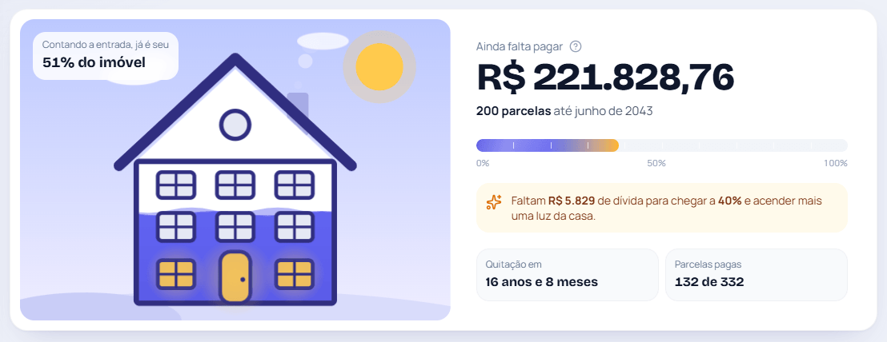
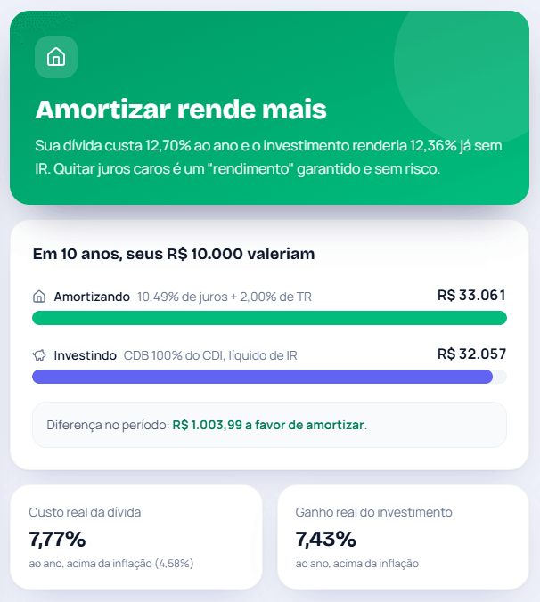
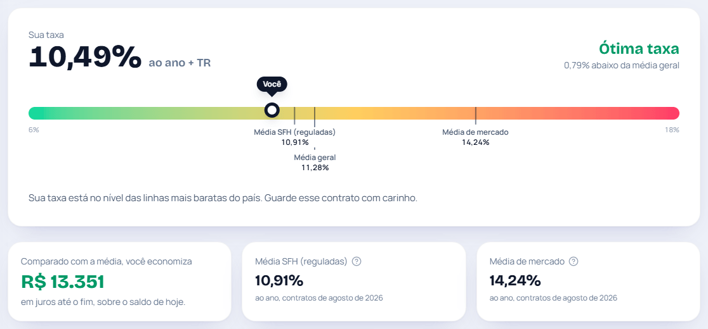

R$ 10 mil a mais hoje tiram R$ 45 mil de juros da sua casa
O Até Quitar refaz a conta do banco com o seu financiamento e mostra quanto cada amortização apaga de juros, com a TR do Banco Central sempre em dia.
- Windows
- macOS
- Linux
- Código aberto
Quanto já é seu, quanto falta e quando acaba
Você cadastra o contrato uma vez, com ajuda em cada campo dizendo onde achar a informação. A casa vai se enchendo conforme a dívida cai, e uma luz acende a cada 10% quitados.

Quanto cada amortização apaga de juros
Digite quanto quer pagar a mais e veja na hora os juros que deixam de existir, a nova data de quitação e a parcela seguinte.
- Uma vez, todo mês ou todo ano
- Reduzir prazo e reduzir parcela lado a lado, com a que economiza mais destacada
- Quanto cada R$ 1 amortizado evita de custo
Um check-in por mês, em menos de um minuto
Confirme a parcela paga, registre a amortização extra e, se quiser, o saldo que o app do banco mostra. Com o saldo real, a projeção passa a partir dele.
- Amortização com dinheiro próprio, FGTS ou 13º
- A fatura linha a linha, como no app do banco
- Comemoração a cada 10% da dívida quitada
Amortizar ou investir? A resposta em reais
O custo real da sua dívida, com os juros do contrato e a TR, contra poupança, CDB, LCI e LCA, Tesouro Selic e Tesouro IPCA+, já sem o Imposto de Renda.
- Ranking no prazo que você escolher, com a sua dívida no meio
- Ganho real acima da inflação
- O que os números não mostram: reserva de emergência e liquidez

A sua taxa é justa?
A taxa do contrato num termômetro contra as médias de financiamento imobiliário que o Banco Central publica todo mês, e quanto isso representa em reais até o fim.
- Médias SFH, de mercado e geral
- Passo a passo da portabilidade para outro banco

SAC ou Price
Os dois sistemas com os dados do seu contrato e quando a Price passa a custar mais.
Parcelas mês a mês
Amortização, juros, TR, seguros e saldo de cada parcela, até a última.
Documento do banco em PDF
Importa o Documento Descritivo do Crédito e confere o saldo antes de gravar.
Taxas do mercado
Selic, CDI, TR, IPCA e poupança do Banco Central, e o que cada uma muda no seu bolso.
Para onde vai a parcela
Quanto abate a dívida, quanto é juros e quanto é seguro e taxa.
Aprender sem economês
TR, CET, MIP e DFI, FGTS, portabilidade e Imposto de Renda em linguagem simples.
Conferido parcela por parcela com o documento do banco
As regras de TR, juros e arredondamento foram conferidas com o Documento Descritivo do Crédito de um contrato real e com simulações de amortização no banco.
| Conferência | Resultado |
|---|---|
| Amortização do SAC | igual à fatura |
| Juros do mês | igual ou 1 centavo |
| Seguro MIP | igual ou 1 centavo |
| Prazo depois de amortizar | igual à simulação do banco |
Comece em um minuto
Sem cadastro em site, sem login e sem mensalidade.
- Baixe e abra o app. Instalador ou portátil para Windows, .dmg para macOS e AppImage para Linux.
- Explore o exemplo ou cadastre o seu. São 5 passos com prévia ao vivo, ou importe o Documento Descritivo do Crédito e pule o cadastro.
- Faça o check-in uma vez por mês. As taxas do Banco Central se atualizam sozinhas.
Seus dados ficam no seu computador. Num arquivo que você copia para fazer backup. A internet só serve para buscar as taxas do Banco Central e avisar quando sai uma versão nova.

Baixe grátis para o seu computador
O app avisa sozinho quando sai uma versão nova.
Windows
seu sistemaNa primeira abertura, se aparecer "O Windows protegeu o computador", clique em Mais informações e depois em Executar assim mesmo.
macOS
seu sistemaNa primeira abertura, vá em Ajustes do Sistema → Privacidade e Segurança e clique em Abrir Mesmo Assim.
E se aparecer "está danificado"?
É o mesmo aviso de app sem assinatura paga. Abra o Terminal, cole xattr -cr "/Applications/Até Quitar.app" e tecle Enter.
Linux
seu sistemaAntes de abrir, dê permissão de execução: botão direito → Propriedades → Permitir executar.
Prefere o terminal?
chmod +x AteQuitar-*.AppImage
Os avisos aparecem porque o app não tem uma assinatura de código comercial, que é paga. O código é aberto e pode ser conferido no GitHub.
Perguntas frequentes
O Até Quitar é gratuito?
Sim. O app é gratuito e de código aberto, sob a licença MIT. Não tem plano pago, anúncio nem cadastro em site.
Meus dados vão para a internet?
Não. Os dados ficam num arquivo SQLite no seu computador, e o PDF do banco é lido ali mesmo. O app só se conecta à internet para buscar as taxas públicas do Banco Central e para saber se há uma versão nova no GitHub.
Funciona com o financiamento de qualquer banco?
Sim, com qualquer financiamento imobiliário pelo SAC ou pela Price, com ou sem correção pela TR, como os da Caixa, do Banco do Brasil e dos bancos privados. A importação do Documento Descritivo do Crédito em PDF reconhece por enquanto um modelo de documento; os outros bancos usam o cadastro guiado.
Vale mais a pena amortizar reduzindo o prazo ou a parcela?
Reduzir o prazo quase sempre economiza mais juros, porque a dívida acaba antes. Reduzir a parcela economiza menos, mas alivia o orçamento todo mês. O app e o simulador de amortização mostram os dois lado a lado, em reais, com os dados do seu contrato.
Os números batem com os do banco?
O app refaz a conta do banco com as mesmas regras de TR, juros e arredondamento, conferidas parcela por parcela com o Documento Descritivo do Crédito de um contrato real. Alguns campos podem diferir em centavos, e cada check-in com a fatura ou o saldo do banco traz o app de volta ao valor exato.
Por que o Windows ou o macOS avisam na primeira abertura?
Porque o app não tem uma assinatura de código comercial, que é paga. O código é aberto e pode ser conferido no GitHub. No Windows, clique em Mais informações → Executar assim mesmo. No macOS, vá em Ajustes do Sistema → Privacidade e Segurança e clique em Abrir Mesmo Assim.
O app substitui o extrato do banco?
Não. Ele é uma ferramenta de acompanhamento e simulação. A fatura, o saldo informado pelo banco e o Documento Descritivo do Crédito sempre têm a palavra final.
Veja a sua casa ficando sua, parcela por parcela
Comece pelo financiamento de exemplo e, quando quiser, troque pelo seu contrato. Leva um minuto e não custa nada.
- Windows
- macOS
- Linux